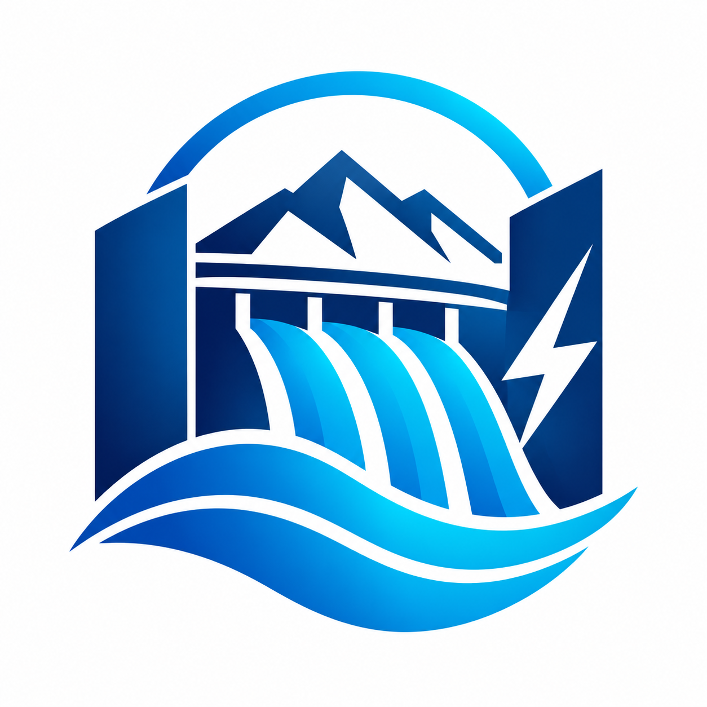
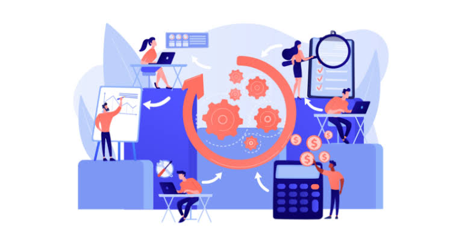
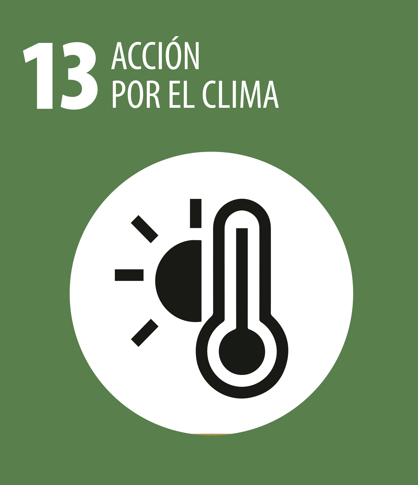
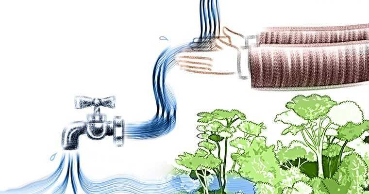

OBJETIVOS Y METAS DE LA EMPRESA

Objetivo 1: Maximizar la generación de energía limpia y renovable
- META: Incrementar el porcentaje de participación de la energía hidráulica en la matriz energética nacional en un 15% durante la próxima década.
- META: Aprovechar de manera continua el ciclo hidrológico natural (lluvias y caudales) para garantizar un suministro inagotable de electricidad sin consumir combustibles fósiles durante los próximos dos años.
- META: Sustituir gradualmente las plantas de generación basadas en carbón y petróleo por centrales hidroeléctricas de menor impacto ambiental
- META: Optimizar el rendimiento de las turbinas existentes mediante la modernización tecnológica para capturar más energía del flujo de agua durante los próximos ocho meses..

Objetivo 2: Garantizar la eficiencia operativa y tecnológica a gran escala
- META: Mantener una eficiencia de conversión energética superior al 90% en las grandes centrales hidroeléctricas.
- META: Asegurar la capacidad de abastecimiento eléctrico a gran escala para satisfacer la demanda de millones de hogares e industrias pesadas durante la próxima semana.
- META: Implementar sistemas de mantenimiento predictivo basados en inteligencia artificial para reducir los tiempos de inactividad de los generadores en un 25%.
- META: Ampliar la capacidad de transporte y distribución eléctrica mediante redes inteligentes (smart grids) conectadas a los complejos hidroeléctricos durante los próximos cinco años.

Objetivo 3: Contribuir activamente a la mitigación del cambio climático
- META: Reducir las emisiones globales de gases de efecto invernadero (GEI) reemplazando la generación termoeléctrica convencional durante las próximas dos semanas.
- META: Mantener operaciones con cero emisiones directas de dióxido de carbono (CO2) durante la fase de generación de electricidad.
- META: Desarrollar programas de compensación de huella de carbono en las áreas circundantes a los embalses mediante reforestación masiva.
- META: Cumplir rigurosamente con los estándares internacionales de sostenibilidad ambiental para proteger la atmósfera y los ecosistemas locales.

Objetivo 4: Optimizar la gestión hídrica y la seguridad territorial
- META: Utilizar los embalses artificiales para regular de forma segura los caudales de los ríos y prevenir inundaciones catastróficas en épocas de lluvias extremas.
- META: Asegurar reservas estratégicas de agua dulce para garantizar el abastecimiento humano y el riego agrícola durante periodos prolongados de sequía.
- META: Establecer planes de gestión integral de cuencas hidrográficas que equilibren la producción energética con la preservación de la flora y fauna acuática.
- META: Monitorear en tiempo real los niveles de agua y las condiciones meteorológicas mediante estaciones telemétricas para una toma de decisiones más rápida y segura durante los próximos tres meses.